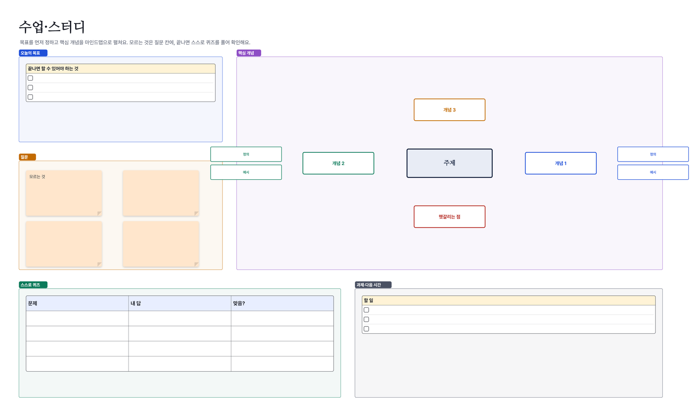

이런 분께: 디자인 팀 밖에서도 쉽게 쓰는 한국어 화이트보드가 필요한 분
Walkie로 할 수 있는 것
- 포스트잇·스탬프·반응·함께 보는 커서·레이저 포인터
- 도형·곡선·연결선, 파워포인트식 점 편집과 다른 앱과 같은 단축키(Ctrl+D·Alt 끌기 복제·맞춤선)
- 점 투표·타이머·댓글·@멘션으로 워크숍 진행
- 템플릿 8종: 회의록·브레인스토밍·회고·칸반·소설 플롯·사건 분석·린 캔버스·스터디
- 무료(2026년 말까지 모든 기능), 서버에 대화·보드를 저장하지 않음


템플릿으로 바로 시작
- Walkie를 설치해요(Windows 10·11, 안드로이드). 혼자 쓰는 "이 기기 보드"는 로그인 없이 바로 열려요.
- 아래 템플릿 파일(.walkie)을 받아 두 번 누르면 Walkie에서 새 보드 한 장으로 열려요. 앱 안 도구 묶음의 "템플릿"에도 같은 템플릿이 있어요.
- 함께 쓰려면 그룹을 만들고 초대 링크를 보내요. 통화를 켜고 같은 보드를 동시에 고쳐요.
Walkie는 이런 점이 달라요
| 통화·채팅 | 보드와 같은 화면에서 그룹 음성 통화(최대 8명)·채팅 |
|---|---|
| 내용 저장 위치 | 대화·보드는 서버에 저장하지 않고 멤버 기기끼리 암호화해 주고받음 |
| 설치 | Windows(Microsoft Store·설치 파일)·안드로이드 앱 — 브라우저판 없음 |
| 언어 | 한국어·영어·프랑스어 |
| 오피스 연동 | 엑셀 범위 → 고칠 수 있는 표·그래프, 워드·PPT → PDF 카드(PC), 보드 → PPTX 내보내기 |
| 요금 | 2026년 12월 31일까지 모든 기능 무료, 이후 요금은 최소 30일 전 고지 |
FigJam·Figma는 해당 회사의 상표이며, Walkie는 그 회사와 관련이 없어요. 다른 도구의 요금·기능은 각 공식 페이지에서 확인해 주세요.
자주 묻는 질문
디자인 파일을 열 수 있나요?
아니요. Walkie는 디자인 도구가 아니라 회의·기획·정리용 보드예요. 그림·PDF·글은 붙여 넣을 수 있어요.
팀원을 어떻게 초대하나요?
그룹을 만들고 이메일·카카오톡 등으로 1회용 초대 링크를 보내요. 받는 사람 이메일을 지정할 수도 있어요.